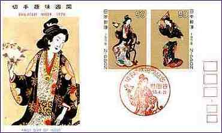
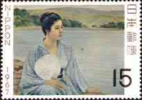
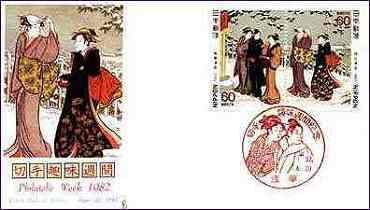
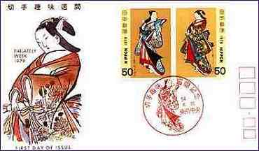

The school of Japanese art best known in the West is that of the Ukiyo-e paintings and woodblock prints of the demimonde, the world of the kabuki theatre and the brothel district.
Ukiyo-e prints began to be produced in the late 17th century, but in 1764 Harunobu produced the first polychrome print. Printmakers of the next generation, including Torii Kiyonaga and
Utamaro, created elegant and sometimes closely observed depictions of courtesans.
In the 19th century the dominant exponent of Ukiyo-e was
Hokusai, who applied his brilliant gifts throughout his long life to landscapes, figures, and every kind of scene, executed as paintings or prints. His
Ukiyo-e image
"The Breaking Wave of Kanagawa" (see below, on the right), a
print of the cycle "The Thirty-six Views of Mt. Fuji" is probably the best known picture in Japanese art.
Tip:
Please point on the images with the mouse index to get
more information about the works of of art displayed.
 |
 |
His most gifted contemporary was Hiroshige, a creator of romantic landscape prints. See above one of his most famous paintings, "The Moon and Wild Geese". The odd angles and shapes through which Hokusai and Hiroshige often viewed landscape, and the work of Kiyonaga and Utamaro, with its emphasis on flat planes and strong linear outlines, had a profound impact on such Western artists as Edgar Degas and Vincent van Gogh.
|
 |
 |
Another school of painting contemporary with Ukiyo-e was Bunjinga, whose style was based on paintings executed by Chinese scholar-painters.
|
 |
 |
 |
Just as Ukiyo-e artists chose to depict figures from life outside the strictures of the Tokugawa shogunate, Bunjin artists turned to Chinese culture. The exemplary exponents of this style are Ike Taiga, Yosa Buson, Tanomura Chikuden, and Yamamoto Baiitsu. (After Microsoft Encarta 1996.)
|
 |
 |